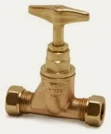
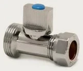
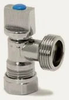
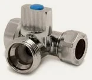
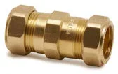
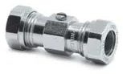
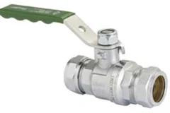
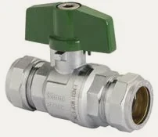
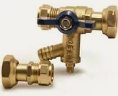

- Armatex
- Компресійні фітинги
- Зворотний клапан подвійний K4426
Pegler Yorkshire · Крани Kuterlite
Зворотний клапан подвійний Kuterlite K4426
Зворотний клапан подвійний з лінії Крани Kuterlite: 6 розмірів (1/2" – 2"). Застосування: вода, підключення приладів.
- Розміри
- 6
- Кінці
- компресійні Kuterlite
- Виробник
- Pegler Yorkshire

Розміри та номери артикулів
Джерело: прайс-лист Kuterlite, жовтень 2024| Розмір | Номер артикулу | Уп. 1 | Уп. 2 | Кількість для запиту |
|---|---|---|---|---|
| 1/2" | 42071 | 5 шт. | 30 шт. | |
| 3/4" | 42072 | 5 шт. | 30 шт. | |
| 1" | 42073 | 1 шт. | 32 шт. | |
| 1.1/4" | 42074 | 1 шт. | 16 шт. | |
| 1.1/2" | 42075 | 1 шт. | 12 шт. | |
| 2" | 42076 | 1 шт. | 8 шт. |
- Лінія
- Крани Kuterlite
- Застосування
- вода, підключення приладів
- Назва в прайс-листі
- DZR Double check valve. ISO 228 parallel female ends. BS EN 13959 E D
Запит ціни: Зворотний клапан подвійний K4426.
Додайте розміри до списку кнопкою «Додати» або одразу напишіть нам. Гуртові ціни, наявність і терміни підготуємо протягом одного робочого дня.
Інші продукти в лінії
Усі лінії системи
Запірний кран K551 · 1 розм. Запірний кран з бронзи PE × мідь PL59A · 1 розм.
Запірний кран з бронзи PE × мідь PL59A · 1 розм.
Кран для приладів, прямий K637 · 1 розм.
Кран для приладів, кутовий K638 · 1 розм.
Кран для приладів, трійниковий K639 · 1 розм.
Зворотний клапан одинарний K424 · 3 розм. Зворотний клапан одинарний з ВР K426 · 6 розм.
Зворотний клапан одинарний з ВР K426 · 6 розм. Зворотний клапан подвійний K4424 · 3 розм.
Зворотний клапан подвійний K4424 · 3 розм.
Кульовий кран запірний K480 · 2 розм.
Кульовий кран чвертьоборотний з важелем PB300 · 3 розм.
Кульовий кран повнопрохідний хромований PB300T · 1 розм.
Комплект для лічильника води PB360WMK · 1 розм.